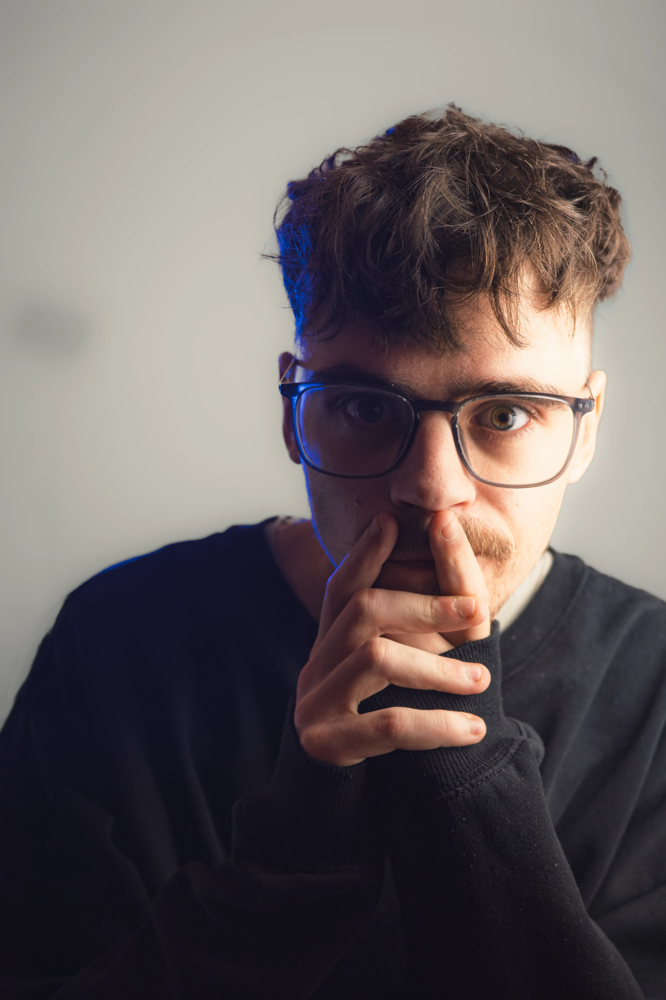
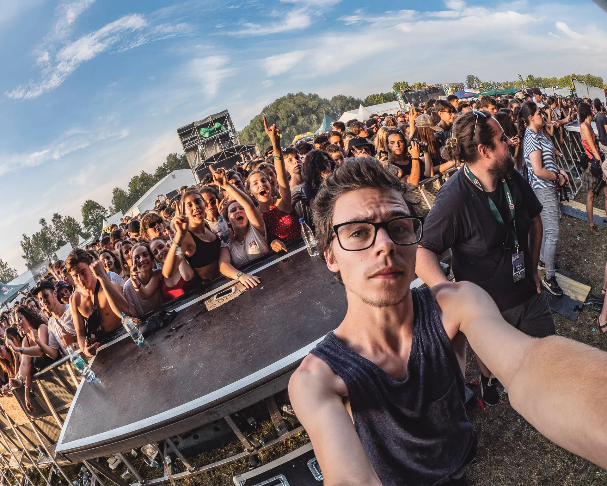
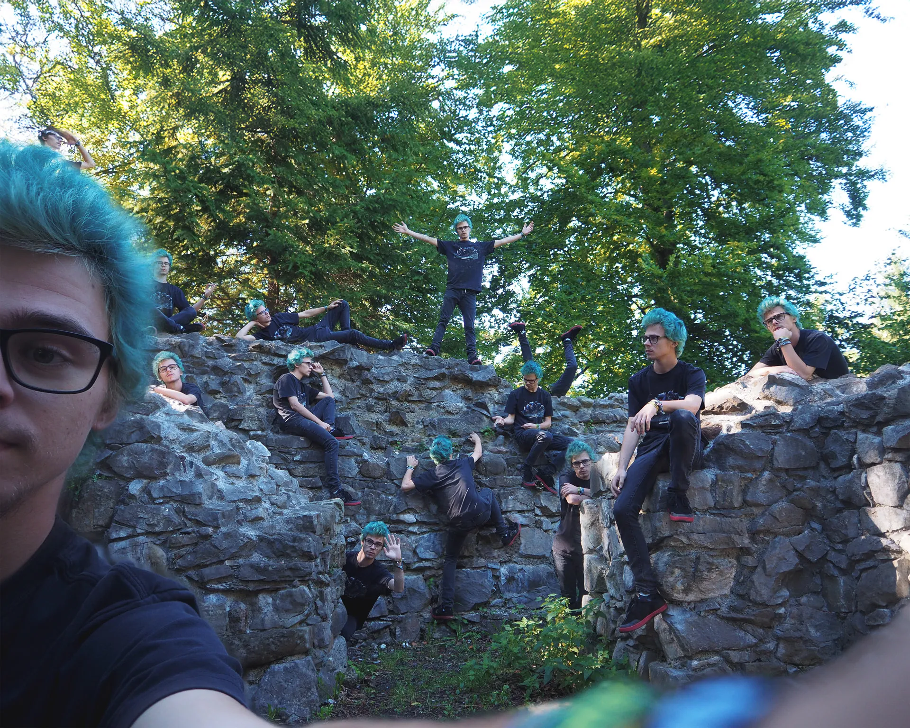
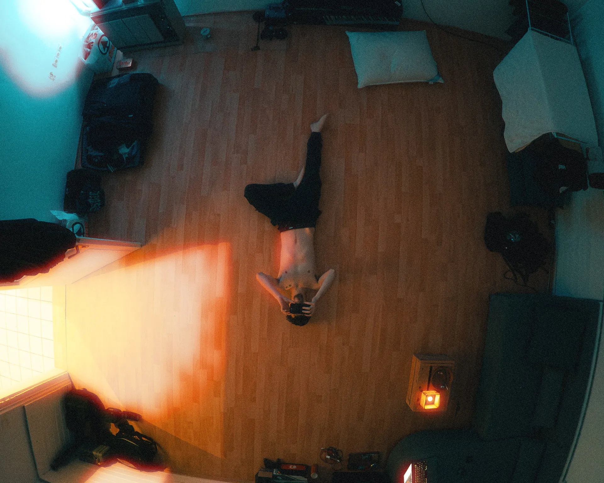
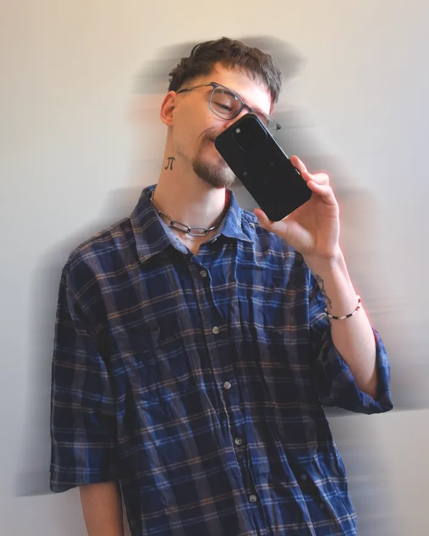

Die Person hinter den Bildern.
Linus Luschtinez — Visual Creator based near Vienna.
Mein Name ist Linus Luschtinez, ich bin ein Kunstschaffender aus der Nähe von Wien. Seit meiner Jugend beschäftige ich mich mit analogen und digitalen Medien, vorwiegend in Form von Foto- und Videografie, aber auch in Form von Digital Design, Musikproduktion und 3D Art.
Aus einer Leidenschaft, die bereits in der Kindheit entfacht wurde, hat sich im Laufe der Jahre ein vielseitiger beruflicher Weg entwickelt, der mich durch verschiedenste kreative Bereiche geführt hat. Nachdem ich 2020 meine Ausbildung zum Fotografen abgeschlossen hatte, habe ich in einer Zeit der Selbstständigkeit meine Skills weiter ausgebaut.
Meine Arbeitsschwerpunkte liegen in der Konzert-, Porträt- und Künstlerfotografie sowie in der Video- und Content-Produktion. In den vergangenen Jahren durfte ich über 100 Künstler:innen und Bands fotografisch begleiten – darunter Kraftklub, OK Kid, Bilderbuch, Käptn Peng, Leoniden, Mothers Cake, Rin, Ufo361, Turbobier und viele mehr.
Gemeinsam mit ausgewählten Künstlern habe ich außerdem über 30 Musikprojekte realisiert – inklusive Musik- und Videoproduktion, Artwork-Design und umfangreichen Social-Media-Inhalten.